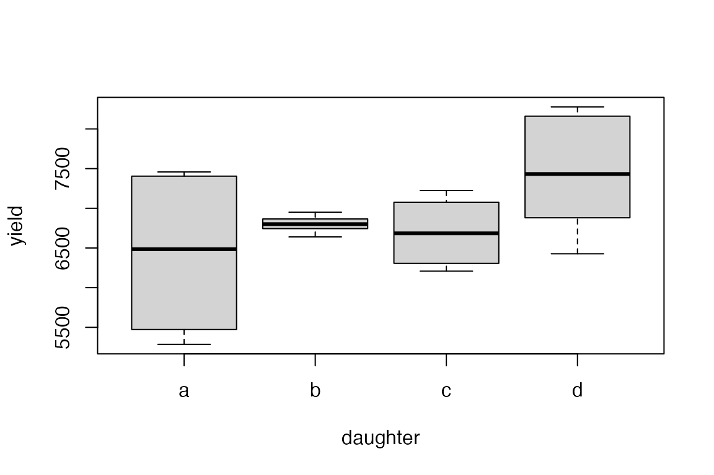

Analysis of Variance (ANOVA)
This vignette will focus on univariate ANOVA in various designs including fixed and mixed effects, and briefly introduce multivariate ANOVA. Models using random effects will be run through the mixlm package.
The following models will be demonstrated: * Fixed effect models * One-way ANOVA * Two-way ANOVA * Covariates in ANOVA * Fixed effect nested ANOVA * Linear mixed models * Classical LMM * Repeated measures LMM
Simulated data
We will start by simulating some data to use in the examples below. In this fictitious setup, milk yield is measured as a function of feed type (low/high protein content), cow breed, bull identity, daughter and age. The three first factors are crossed and balanced, while daughter is nested under bull.
The yield is generated with a linear model with some noise.
set.seed(123)
dat <- data.frame(
feed = factor(rep(rep(c("low","high"), each=6), 4)),
breed = factor(rep(c("NRF","Hereford","Angus"), 16)),
bull = factor(rep(LETTERS[1:4], each = 12)),
daughter = factor(c(rep(letters[1:4], 3), rep(letters[5:8], 3), rep(letters[9:12], 3), rep(letters[13:16], 3))),
age = round(rnorm(48, mean = 36, sd = 5))
)
dat$yield <- 150*with(dat, 10 + 3 * as.numeric(feed) + as.numeric(breed) +
2 * as.numeric(bull) + 1 * as.numeric(sample(dat$daughter, 48)) +
0.5 * age + rnorm(48, sd = 2))
head(dat)
#> feed breed bull daughter age yield
#> 1 low NRF A a 33 5541.301
#> 2 low Hereford A b 35 6862.560
#> 3 low Angus A c 44 6954.182
#> 4 low NRF A d 36 8125.363
#> 5 low Hereford A a 37 7344.458
#> 6 low Angus A b 45 7987.227Fixed effect models
The simplest form of ANOVA is the fixed effect model. This model assumes that the levels of the factor are fixed and that the only source of variation is the factor itself.
One-way ANOVA
Here we assess only the feed effect on yield, i.e., the following model: where is the feed level and is the observation within the feed level.
mod <- lm(yield ~ feed, data = dat)
print(anova(mod))
#> Analysis of Variance Table
#>
#> Response: yield
#> Df Sum Sq Mean Sq F value Pr(>F)
#> feed 1 1755955 1755955 2.3294 0.1338
#> Residuals 46 34675246 753810In the ANOVA table one can look at Pr(>F) to see if the feed factor has a significant effect on yield. The summary function can be used to get more information about the underlying regression model.
summary(mod)
#>
#> Call:
#> lm(formula = yield ~ feed, data = dat)
#>
#> Residuals:
#> Min 1Q Median 3Q Max
#> -1904.2 -552.8 -135.1 581.1 1898.4
#>
#> Coefficients:
#> Estimate Std. Error t value Pr(>|t|)
#> (Intercept) 7254.3 125.3 57.887 <2e-16 ***
#> feed(high) -191.3 125.3 -1.526 0.134
#> ---
#> Signif. codes: 0 '***' 0.001 '**' 0.01 '*' 0.05 '.' 0.1 ' ' 1
#>
#> s: 868.2 on 46 degrees of freedom
#> Multiple R-squared: 0.0482,
#> Adjusted R-squared: 0.02751
#> F-statistic: 2.329 on 1 and 46 DF, p-value: 0.1338Basic model assessment can be done using the plot function.
par(old.par)Two-way crossed effects ANOVA
Here we assess the feed and breed effects and their interaction effect on yield, i.e., the following model: where is the feed level and is the observation within the feed level.
mod <- lm(yield ~ feed*breed, data = dat)
print(anova(mod))
#> Analysis of Variance Table
#>
#> Response: yield
#> Df Sum Sq Mean Sq F value Pr(>F)
#> feed 1 1755955 1755955 2.1892 0.1464
#> breed 2 126874 63437 0.0791 0.9241
#> feed:breed 2 860065 430032 0.5361 0.5890
#> Residuals 42 33688307 802103If the interaction effect is not significant, we can simplify the model to:
Types of sums of squares
The classical way of defining sums of squares are Type I, Type II, and Type III, as described in the documentation of the Anova() function in the car package.
# Type I - Sequential testing, including one and one effect
print(anova(mod))
#> Analysis of Variance Table
#>
#> Response: yield
#> Df Sum Sq Mean Sq F value Pr(>F)
#> feed 1 1755955 1755955 2.2363 0.1419
#> breed 2 126874 63437 0.0808 0.9225
#> Residuals 44 34548372 785190
# Type II - Testing each term after all others,
# except ignoring the term's higher-order relatives
print(Anova(mod, type="II"))
#> Anova Table (Type II tests)
#>
#> Response: yield
#> Sum Sq Df F value Pr(>F)
#> feed 1755955 1 2.2363 0.1419
#> breed 126874 2 0.0808 0.9225
#> Residuals 34548372 44
# Type III - Testing each term after all others,
# including the term's higher-order relatives
print(Anova(mod, type="III"))
#> Anova Table (Type III tests)
#>
#> Response: yield
#> Sum Sq Df F value Pr(>F)
#> (Intercept) 2525982362 1 3217.0322 <2e-16 ***
#> feed 1755955 1 2.2363 0.1419
#> breed 126874 2 0.0808 0.9225
#> Residuals 34548372 44
#> ---
#> Signif. codes: 0 '***' 0.001 '**' 0.01 '*' 0.05 '.' 0.1 ' ' 1For the two-way ANOVA model, the Type I and Type II sums of squares are the same, while Type III differs. With balanced data, this only happens when the contrast coding is of the treatment/reference type.
Contrast codings
The contrast coding can be specified for each factor in the model.
The default is reference coding, but other codings can be specified
using the contrasts Since we are running lm() through the
mixlm package, we can use the contrasts argument to specify
the coding for all effects simultaneously.
# Sum-coding, i.e., the sum of all levels is zero and all effects
# are orthogonal in the balanced case.
mod <- lm(yield ~ feed*breed, data = dat, contrasts="contr.sum")
print(Anova(mod, type="III"))
#> Anova Table (Type III tests)
#>
#> Response: yield
#> Sum Sq Df F value Pr(>F)
#> (Intercept) 2525982362 1 3149.2013 <2e-16 ***
#> feed 1755955 1 2.1892 0.1464
#> breed 126874 2 0.0791 0.9241
#> feed:breed 860065 2 0.5361 0.5890
#> Residuals 33688307 42
#> ---
#> Signif. codes: 0 '***' 0.001 '**' 0.01 '*' 0.05 '.' 0.1 ' ' 1
# Weighted coding, i.e., the sum of all levels is zero and the effects
# are weighted by the number of levels, effect-wise.
mod <- lm(yield ~ feed*breed, data = dat, contrasts="contr.weighted")
print(Anova(mod, type="III"))
#> Anova Table (Type III tests)
#>
#> Response: yield
#> Sum Sq Df F value Pr(>F)
#> (Intercept) 2525982362 1 3149.2013 <2e-16 ***
#> feed 1755955 1 2.1892 0.1464
#> breed 126874 2 0.0791 0.9241
#> feed:breed 860065 2 0.5361 0.5890
#> Residuals 33688307 42
#> ---
#> Signif. codes: 0 '***' 0.001 '**' 0.01 '*' 0.05 '.' 0.1 ' ' 1Instead of specifying the contrasts in a specific model, it is also possible to set the contrasts globally for the session. This means that all subsequent models, unless specified otherwise, will use the specified contrasts.
Covariates in ANOVA
Adding covariates to an ANOVA model is straightforward. Here we add the age of the cow as a covariate to the two-way ANOVA model. The model becomes: where is the age of the cow and is its linear coefficient.
mod <- lm(yield ~ feed*breed + age, data = dat)
print(Anova(mod, type="II"))
#> Anova Table (Type II tests)
#>
#> Response: yield
#> Sum Sq Df F value Pr(>F)
#> feed 1718601 1 2.9288 0.0945692 .
#> breed 13015 2 0.0111 0.9889747
#> age 9629682 1 16.4106 0.0002214 ***
#> feed:breed 793690 2 0.6763 0.5140804
#> Residuals 24058625 41
#> ---
#> Signif. codes: 0 '***' 0.001 '**' 0.01 '*' 0.05 '.' 0.1 ' ' 1Fixed effect nested ANOVA
In the case of nested factors, we can specify this in the model. In the current model, we assume that bulls are fixed effects that we are interested in and that daughters are nested under bulls. In this case, the daughters do not have any special attributes that would interfere with the estimation of the bull effect, so we do not have to assume that they are random effects. The model becomes:
mod <- lm(yield ~ bull + daughter%in%bull, data = dat)
print(Anova(mod, type="II"))
#> Note: model has aliased coefficients
#> sums of squares computed by model comparison
#> Anova Table (Type II tests)
#>
#> Response: yield
#> Sum Sq Df F value Pr(>F)
#> bull 2130879 3 0.8630 0.4703
#> bull:daughter 7961749 12 0.8061 0.6421
#> Residuals 26338573 32Linear mixed models
Adding random effects to a model can be done either using least squares modelling through the mixlm package or using ML/REML estimation through the lme4 package (or similar).
Classical - mixlm
Using the mixlm package, we specify the random effects using the
r() function. If we assume that the bull is a random
selection from the population of bulls, we can specify this as a random
effect when focusing on feed. The model looks like a fixed effect model,
but the error structure is different:
mod <- lm(yield ~ feed*r(bull), data = dat)
print(Anova(mod, type="II"))
#> Analysis of variance (unrestricted model)
#> Response: yield
#> Mean Sq Sum Sq Df F value Pr(>F)
#> feed 1755954.98 1755954.98 1 8.20 0.0644
#> bull 710292.91 2130878.72 3 3.32 0.1755
#> feed:bull 214160.94 642482.83 3 0.27 0.8477
#> Residuals 797547.10 31901884.17 40 - -
#>
#> Err.term(s) Err.df VC(SS)
#> 1 feed (3) 3 fixed
#> 2 bull (3) 3 41344
#> 3 feed:bull (4) 40 -97231
#> 4 Residuals - - 797547
#> (VC = variance component)
#>
#> Expected mean squares
#> feed (4) + 6 (3) + 24 Q[1]
#> bull (4) + 6 (3) + 12 (2)
#> feed:bull (4) + 6 (3)
#> Residuals (4)In addition to the ordinary ANOVA table, an overview of variance components and expected mean squares are printed.
Restrictions
The mixlm package has unrestricted models as default, but it is possible to turn on restriction.
mod <- lm(yield ~ feed*r(bull), data = dat, unrestricted = FALSE)
print(Anova(mod, type="II"))
#> Analysis of variance (restricted model)
#> Response: yield
#> Mean Sq Sum Sq Df F value Pr(>F)
#> feed 1755954.98 1755954.98 1 8.20 0.0644
#> bull 710292.91 2130878.72 3 0.89 0.4543
#> feed:bull 214160.94 642482.83 3 0.27 0.8477
#> Residuals 797547.10 31901884.17 40 - -
#>
#> Err.term(s) Err.df VC(SS)
#> 1 feed (3) 3 fixed
#> 2 bull (4) 40 -7271
#> 3 feed:bull (4) 40 -97231
#> 4 Residuals - - 797547
#> (VC = variance component)
#>
#> Expected mean squares
#> feed (4) + 6 (3) + 24 Q[1]
#> bull (4) + 12 (2)
#> feed:bull (4) + 6 (3)
#> Residuals (4)This effects which tests are performed and how the variance components are estimated.
Repeated Measures
A repeated measures model can be a mixed model with a random effect for the repeated measures, where the repeated measures are nested under the subjects. Longitudinal data is a common example of repeated measures data, where the replicates are repetitions over time within subject. If we subset the simulated data, we can add a longitudinal effect to the model, in this case a random variation over three time-points. The time effect does not necessarily need to be random.
set.seed(123)
long <- dat[c(1:4,9:12), c("feed", "daughter", "yield")]
long <- rbind(long, long, long)
long$daughter <- factor(long$daughter) # Remove redundant daughter
long$time <- factor(rep(1:3, each=8))
long$yield <- long$yield + rnorm(24, sd = 100) + rep(c(-200,0,200), each=8)
plot(yield~daughter, data=long)
Now we have a feed effect, individuals (daughters), and a time effect repeated inside daughters, with the model:
mod <- lm(yield ~ r(daughter) + feed*r(time), data = long, unrestricted=FALSE)
print(Anova(mod, type="II"))
#> Analysis of variance (restricted model)
#> Response: yield
#> Mean Sq Sum Sq Df F value Pr(>F)
#> daughter 1085642.42 3256927.25 3 1.854 0.1808
#> feed 21759.92 21759.92 1 7.079 0.1170
#> time 213465.79 426931.58 2 0.365 0.7005
#> feed:time 3073.71 6147.41 2 0.005 0.9948
#> Residuals 585554.07 8783311.09 15 - -
#>
#> Err.term(s) Err.df VC(SS)
#> 1 daughter (5) 15 83348
#> 2 feed (4) 2 fixed
#> 3 time (5) 15 -46511
#> 4 feed:time (5) 15 -145620
#> 5 Residuals - - 585554
#> (VC = variance component)
#>
#> Expected mean squares
#> daughter (5) + 6 (1)
#> feed (5) + 4 (4) + 12 Q[2]
#> time (5) + 8 (3)
#> feed:time (5) + 4 (4)
#> Residuals (5)REML
REML estimation can be done directly with the lme4 package, but we can also do this through the mixlm package, leveraging the r() function.
mod <- lm(yield ~ feed*r(bull), data = dat, REML = TRUE)
#> boundary (singular) fit: see help('isSingular')
print(Anova(mod, type="III"))
#> Analysis of Deviance Table (Type III Wald chisquare tests)
#>
#> Response: yield
#> Chisq Df Pr(>Chisq)
#> (Intercept) 3350.9550 1 <2e-16 ***
#> feed 2.3294 1 0.1269
#> ---
#> Signif. codes: 0 '***' 0.001 '**' 0.01 '*' 0.05 '.' 0.1 ' ' 1To see how mixlm transforms the model to lme4, we can print the model.
print(mod)
#> Linear mixed model fit by REML ['lmerMod']
#> Formula: yield ~ feed + (1 | bull) + (1 | feed:bull)
#> Data: dat
#> REML criterion at convergence: 760.7979
#> Random effects:
#> Groups Name Std.Dev.
#> feed:bull (Intercept) 0.0
#> bull (Intercept) 0.0
#> Residual 868.2
#> Number of obs: 48, groups: feed:bull, 8; bull, 4
#> Fixed Effects:
#> (Intercept) feed1
#> 7254.3 -191.3
#> optimizer (nloptwrap) convergence code: 0 (OK) ; 0 optimizer warnings; 1 lme4 warningsWe observe that (1 | bull) and (1 | feed:bull) are added to the model, which means that random intercepts are added for both bull and the interaction.
Multivariate ANOVA (MANOVA)
Basic multivariate ANOVA can be done using the lm() function, if we create a matrix of responses. In this case, we add a mastitis effect to the model.
dat$mastitis <- as.numeric(dat$breed) + as.numeric(dat$feed) + rnorm(48, sd = 1)The model becomes: where each of the model terms now are vectors matching the number of responses.
mod <- lm(cbind(yield,mastitis) ~ feed*breed, data = dat)
print(Anova(mod, type="II"))
#>
#> Type II MANOVA Tests: Pillai test statistic
#> Df test stat approx F num Df den Df Pr(>F)
#> feed 1 0.16426 4.0292 2 41 0.025260 *
#> breed 2 0.47415 6.5256 4 84 0.000127 ***
#> feed:breed 2 0.14929 1.6939 4 84 0.159025
#> ---
#> Signif. codes: 0 '***' 0.001 '**' 0.01 '*' 0.05 '.' 0.1 ' ' 1The test statistics are joint for all responses, here in the form of the default Pillai’s test statistics. Other statistics can be produced as follows:
print(Anova(mod, type="II", test="Wilks"))
#>
#> Type II MANOVA Tests: Wilks test statistic
#> Df test stat approx F num Df den Df Pr(>F)
#> feed 1 0.83574 4.0292 2 41 0.02526 *
#> breed 2 0.52761 7.7226 4 82 2.48e-05 ***
#> feed:breed 2 0.85375 1.6865 4 82 0.16100
#> ---
#> Signif. codes: 0 '***' 0.001 '**' 0.01 '*' 0.05 '.' 0.1 ' ' 1
print(Anova(mod, type="II", test="Hotelling-Lawley"))
#>
#> Type II MANOVA Tests: Hotelling-Lawley test statistic
#> Df test stat approx F num Df den Df Pr(>F)
#> feed 1 0.19655 4.0292 2 41 0.02526 *
#> breed 2 0.89201 8.9201 4 80 5.227e-06 ***
#> feed:breed 2 0.16775 1.6775 4 80 0.16336
#> ---
#> Signif. codes: 0 '***' 0.001 '**' 0.01 '*' 0.05 '.' 0.1 ' ' 1
print(Anova(mod, type="II", test="Roy"))
#>
#> Type II MANOVA Tests: Roy test statistic
#> Df test stat approx F num Df den Df Pr(>F)
#> feed 1 0.19655 4.0292 2 41 0.02526 *
#> breed 2 0.88826 18.6535 2 42 1.595e-06 ***
#> feed:breed 2 0.14285 2.9999 2 42 0.06056 .
#> ---
#> Signif. codes: 0 '***' 0.001 '**' 0.01 '*' 0.05 '.' 0.1 ' ' 1The summary function can be used to get more information about the underlying regression model, here revealing the regressions are performed separately for each response.
summary(mod)
#> Response yield :
#>
#> Call:
#> lm(formula = yield ~ feed * breed, data = dat)
#>
#> Residuals:
#> Min 1Q Median 3Q Max
#> -2123.5 -506.2 -109.0 625.8 1762.0
#>
#> Coefficients:
#> Estimate Std. Error t value Pr(>|t|)
#> (Intercept) 7254.28 129.27 56.118 <2e-16 ***
#> feed(high) -191.27 129.27 -1.480 0.146
#> breed(Angus) 40.78 182.81 0.223 0.825
#> breed(Hereford) -72.52 182.81 -0.397 0.694
#> feed(high):breed(Angus) 116.25 182.81 0.636 0.528
#> feed(high):breed(Hereford) 71.26 182.81 0.390 0.699
#> ---
#> Signif. codes: 0 '***' 0.001 '**' 0.01 '*' 0.05 '.' 0.1 ' ' 1
#>
#> Residual standard error: 895.6 on 42 degrees of freedom
#> Multiple R-squared: 0.07529, Adjusted R-squared: -0.03479
#> F-statistic: 0.6839 on 5 and 42 DF, p-value: 0.6382
#>
#>
#> Response mastitis :
#>
#> Call:
#> lm(formula = mastitis ~ feed * breed, data = dat)
#>
#> Residuals:
#> Min 1Q Median 3Q Max
#> -2.25984 -0.60241 0.07629 0.60307 1.82843
#>
#> Coefficients:
#> Estimate Std. Error t value Pr(>|t|)
#> (Intercept) 3.5537 0.1316 26.994 < 2e-16 ***
#> feed(high) -0.3506 0.1316 -2.663 0.0109 *
#> breed(Angus) -0.8802 0.1862 -4.728 2.56e-05 ***
#> breed(Hereford) -0.1653 0.1862 -0.888 0.3795
#> feed(high):breed(Angus) -0.3722 0.1862 -1.999 0.0521 .
#> feed(high):breed(Hereford) 0.3991 0.1862 2.144 0.0379 *
#> ---
#> Signif. codes: 0 '***' 0.001 '**' 0.01 '*' 0.05 '.' 0.1 ' ' 1
#>
#> Residual standard error: 0.9121 on 42 degrees of freedom
#> Multiple R-squared: 0.5399, Adjusted R-squared: 0.4852
#> F-statistic: 9.858 on 5 and 42 DF, p-value: 2.755e-06